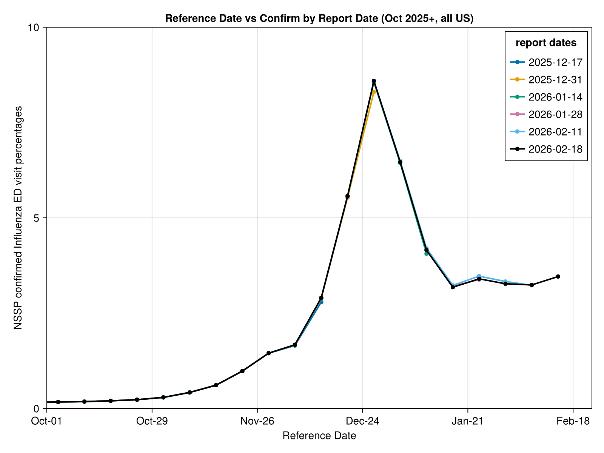
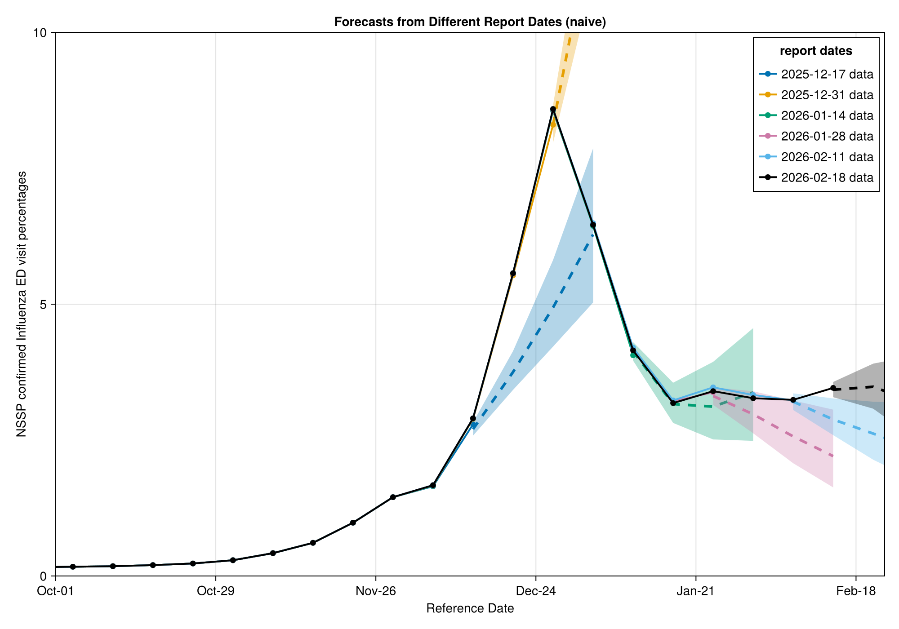

using MarkdownForecasting percentage data with NowcastAutoGP
Forecasting public NSSP ED visit percentages
CDC Center for Forecasting and Outbreak Analytics (CFA/CDC)
In Getting started with NowcastAutoGP, we saw how to use NowcastAutoGP to forecast a univariate time series of hospitalization counts by batching over nowcasts. In this vignette, we will demo how to use NowcastAutoGP to do the same with percentage data. This functionality is useful for forecasting public National Syndromic Surveillance Program (NSSP) Emergency Department (ED) visit percentages, that is the proportion of all ED visits in a period that are due to a specific condition.
Loading dependencies
using NowcastAutoGP
using CairoMakie
using Dates, Distributions, Random
using CSV, TidierData
using Parameters: @unpack
Random.seed!(123)
CairoMakie.activate!(type = "png")Loading Surveillance Data
We are going to demonstrate using NowcastAutoGP for forecasting the CDC's National Syndromic Surveillance Program (NSSP) reported Influenza Emergency Department (ED) visit percentages. We stored a vintaged data set locally, which was accessed
datapath = joinpath(
pkgdir(NowcastAutoGP), "docs", "vignettes", "data", "vintaged_us_nssp_data_flu.csv"
)
nssp_vintage_flu_data = CSV.read(datapath, DataFrame)
nssp_vintage_flu_data = @chain nssp_vintage_flu_data begin
@rename(reference_date = target_end_date)
@rename(report_date = as_of)
end
nssp_vintage_flu_data = unique(nssp_vintage_flu_data, [:reference_date, :report_date])
@glimpse nssp_vintage_flu_data
unique_report_dates = sort(unique(nssp_vintage_flu_data.report_date))
# Select every 2nd report date, but always include the latest one
selected_dates = unique_report_dates[1:2:end]
if unique_report_dates[end] ∉ selected_dates
selected_dates = vcat(selected_dates, unique_report_dates[end])
end
n_dates = length(selected_dates)
# Set up shared x-axis tick positions and labels
plot_start_date = Date(2025, 10, 1)
plot_end_date = Date(2026, 2, 23)
# Create tick positions and labels (show every 4 weeks ≈ monthly)
tick_dates = collect(range(plot_start_date, step = Week(4), length = 13))
tick_labels = [monthname(d)[1:3] * "-" * string(d)[(end - 1):end] for d in tick_dates]
# Generate colors - latest date will be black
colors = [i == n_dates ? :black : Makie.wong_colors()[mod1(i, 7)] for i in 1:n_dates]6-element Vector{Any}:
RGBA{Float32}(0.0, 0.44705883, 0.69803923, 1.0)
RGBA{Float32}(0.9019608, 0.62352943, 0.0, 1.0)
RGBA{Float32}(0.0, 0.61960787, 0.4509804, 1.0)
RGBA{Float32}(0.8, 0.4745098, 0.654902, 1.0)
RGBA{Float32}(0.3372549, 0.7058824, 0.9137255, 1.0)
:blackVintaged Surveillance Data
We plot the vintaged surveillance data, where each line represents the data as reported on a given report date. The latest vintage is shown in black.
# Create figure
fig = Figure(size = (800, 600))
ax = Axis(
fig[1, 1],
xlabel = "Reference Date",
ylabel = "NSSP confirmed Influenza ED visit percentages",
title = "Reference Date vs Confirm by Report Date (Oct 2025+, all US)"
)
# Plot each selected report date using reference_date directly
for (report_date, color) in zip(selected_dates, colors)
date_data = @chain nssp_vintage_flu_data begin
@filter(report_date == !!report_date)
@arrange(reference_date)
end
scatterlines!(
ax, date_data.reference_date, date_data.nssp_pcr,
color = color,
label = string(report_date),
markersize = 8,
linewidth = 2
)
end
# Set ticks and limits after plotting (DateTimeConversion is now active)
ax.xticks = (tick_dates, tick_labels)
axislegend(ax, "report dates"; position = :rt)
xlims!(ax, plot_start_date, plot_end_date)
ylims!(ax, 0, 10)
resize_to_layout!(fig)
fig
We see that the reported percentages for a given reference date change less over time than the total counts did in the previous vignette, but there are still some changes over time. In this vignette, we illustrate how to use NowcastAutoGP to forecast the percentage data, and we will just use the latest vintage for training, which is the black line in the plot above. For nowcasting options please refer back to the Getting started with NowcastAutoGP vignette.
Fitting a NowcastAutoGP model to the percentage data
We will use the nearly the same code as in the previous vignette to fit a NowcastAutoGP model but note that we will use the "percentage" transformations instead of "boxcox" transformations, which are more appropriate for percentage data. This transform applies a scaled logit transformation to the data, which maps the percentages from the (0, 100) range to the real line.
function fit_on_data(
report_date;
n_redact,
max_ahead = 8,
training_data = training_data,
n_particles = 24, # number of SMC particles, i.e. GP models, to maintain in the ensemble
smc_data_proportion = 0.1, # proportion of data to ingest per SMC step, by default shuffled batches
n_mcmc = 100, n_hmc = 20 # number of MCMC and HMC steps to run after each SMC step for particle refinement/refresh
)
# Filter for correct report date
date_data = @chain training_data begin
@filter(report_date == !!report_date)
@arrange(reference_date)
end
# Dates to forecast
forecast_dates = [maximum(date_data.reference_date) + Week(k) for k in 0:max_ahead]
transformation, inv_transformation = get_transformations("percentage", date_data.nssp_pcr)
data_to_fit = create_transformed_data(
date_data.reference_date[1:(end - n_redact)],
date_data.nssp_pcr[1:(end - n_redact)]; transformation
)
data_to_revise = (
revise_dates = date_data.reference_date[(end - n_redact + 1):end],
revise_values = date_data.nssp_pcr[(end - n_redact + 1):end],
)
model = make_and_fit_model(
data_to_fit;
n_particles,
smc_data_proportion,
n_mcmc, n_hmc
)
return model, forecast_dates, transformation, inv_transformation, data_to_revise
endWe also give a handy plotting utility for plotting our results.
function plot_with_forecasts(
forecasts, title::String;
n_ahead,
selected_dates,
colors = colors,
flu_data = nssp_vintage_flu_data,
plot_start_date = plot_start_date,
plot_end_date = plot_end_date,
y_lim_up = 10,
size = (1000, 700),
xticks = (tick_dates, tick_labels)
)
# Convert Date xticks to numeric — band! and lines! don't support Date
numeric_xticks = (Dates.value.(xticks[1]), xticks[2])
fig = Figure(size = size)
ax = Axis(
fig[1, 1],
xlabel = "Reference Date",
ylabel = "NSSP confirmed Influenza ED visit percentages",
title = title,
xticks = numeric_xticks
)
# Plot forecasts
for (report_date, forecast, color) in zip(selected_dates, forecasts, colors)
date_data = @chain flu_data begin
@filter(report_date == !!report_date)
@arrange(reference_date)
end
# Plot historical data as light lines
scatterlines!(
ax, Dates.value.(date_data.reference_date), date_data.nssp_pcr,
color = color,
linewidth = 2,
label = "$(report_date) data"
)
# Extract quantiles for forecasts
q25 = forecast.iqrs[1:n_ahead, 1]
median = forecast.iqrs[1:n_ahead, 2]
q75 = forecast.iqrs[1:n_ahead, 3]
forecast_date_values = Dates.value.(forecast.dates[1:n_ahead])
# Plot uncertainty band (25%-75%)
band!(
ax, forecast_date_values, q25, q75,
color = (color, 0.3)
)
# Plot median forecast
lines!(
ax, forecast_date_values, median,
color = color,
linewidth = 3,
linestyle = :dash
)
end
axislegend(ax, "report dates"; position = :rt)
xlims!(ax, Dates.value(plot_start_date), Dates.value(plot_end_date))
ylims!(ax, 0, y_lim_up)
resize_to_layout!(fig)
return fig
endWe now fit a model for each selected report date. We redact the most recent week of data (n_redact = 1) to simulate the effect of reporting delays, and store the fitted model along with forecast dates and transformation functions.
fitted_models_by_report_date = map(selected_dates) do report_date
model, forecast_dates,
transformation,
inv_transformation,
data_to_revise = fit_on_data(
report_date;
n_redact = 1,
training_data = nssp_vintage_flu_data,
n_particles = 24
)
return (
model_dict = Dict(model), forecast_dates = forecast_dates,
transformation = transformation, inv_transformation = inv_transformation,
data_to_revise = data_to_revise,
)
end[ Info: Using percentage transformation
┌ Warning: Using more particles than available threads.
└ @ AutoGP ~/.julia/packages/AutoGP/SVRPE/src/api.jl:226
[ Info: Using percentage transformation
┌ Warning: Using more particles than available threads.
└ @ AutoGP ~/.julia/packages/AutoGP/SVRPE/src/api.jl:226
[ Info: Using percentage transformation
┌ Warning: Using more particles than available threads.
└ @ AutoGP ~/.julia/packages/AutoGP/SVRPE/src/api.jl:226
[ Info: Using percentage transformation
┌ Warning: Using more particles than available threads.
└ @ AutoGP ~/.julia/packages/AutoGP/SVRPE/src/api.jl:226
[ Info: Using percentage transformation
┌ Warning: Using more particles than available threads.
└ @ AutoGP ~/.julia/packages/AutoGP/SVRPE/src/api.jl:226
[ Info: Using percentage transformation
┌ Warning: Using more particles than available threads.
└ @ AutoGP ~/.julia/packages/AutoGP/SVRPE/src/api.jl:226
Forecasting with naive nowcasts
As an example, we forecast naively by treating the latest reported percentage as the best estimate of the eventual value.
n_forecasts = 2000
naive_forecasts_by_reference_date = map(fitted_models_by_report_date) do fitted_model
@unpack model_dict, forecast_dates, transformation, inv_transformation,
data_to_revise = fitted_model
model = GPModel(model_dict)
naive_nowcasts = create_nowcast_data(
[data_to_revise.revise_values], data_to_revise.revise_dates;
transformation = transformation,
)
forecasts = forecast_with_nowcasts(
model, naive_nowcasts, forecast_dates, n_forecasts;
inv_transformation = inv_transformation,# forecast_n_hmc = 1,
)
iqr_forecasts = mapreduce(vcat, eachrow(forecasts)) do fc
qs = quantile(fc, [0.25, 0.5, 0.75])
qs'
end
return (dates = forecast_dates, forecasts = forecasts, iqrs = iqr_forecasts)
endFor more sophisticated nowcasting approaches that correct for this, refer back to the Getting started with NowcastAutoGP vignette.
plot_with_forecasts(
naive_forecasts_by_reference_date, "Forecasts from Different Report Dates (naive)";
n_ahead = 4,
selected_dates = selected_dates
)
This page was generated using Literate.jl.